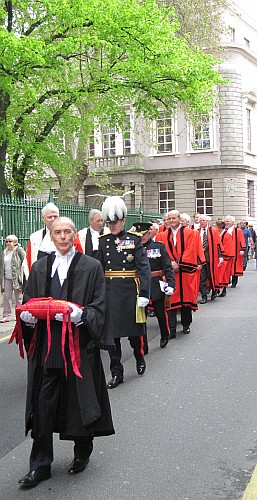

Ch'tait Mardi passé qu'était l'grand jour, garçons.
Nou zéthait dit que ch'tait unne aoutre couronnation. Et, ma fé, ch'en 'tait iune ettou sus un sens, car ch'tait la grande occasion erminse dépis si longtemps, ch'est-à-dithe que ch'était Mardi que l'souiasiaux dans la belle cage de la Place Royale prenaient le vautour qui d'meuthe au Hocq et en faisaient unne rouoge-gorge.
Ou vos r'souvenez bein sans doute que la dernié feis que nou z-yavait êprouvé, yavait des grands ouaisiaux qui n'voulaient pas que ch'la s'fisse et comment qu'nou décidi d'envié l'affaithe dévant l's ouaisiaux d'la pus haoute volèe, ch'est-à-dithe les siens du Conseil Privé.
Eh bein, quand ches grands-là ouïrent les objections des ouaisiaux d'ichin qu'il avaient fait v'nin d'vant ieux, et êcouté les explication du pêrrotchet angliais que l'vautour du Hocq avait engagi pour lis bâilli un coup d'main, i' décidirent qui n'yavait rein de bein séthieux contre le vautour, et comme ch'tait les ouaisiaux jêrriais qui, à l'unanimité, l'avaient chouaisi pour en faithe unne rouoge-gorge, i' fallait s'en r'venin tout d'suite dans l'île pour compliété unne opéthâtion qui n'éthait jammais deu avé tèt erminse.

Alors comme je vos ai dêjà dit, ch'tait Mardi qu'était l'grand jour, et touos l's ouaisiaux qui n'taient pas à picoté des patates se réunirent attouo d'la belle cage pour vaie la cérémonie, et j'vos assaeuthe qu'i yen avait de toutes les variétés.
Les jutcheurs 'taient si chergis qu'i n'avaient que d'en rompre; jamais n'yavait ieu tant d'ouaisiaux dans la cage dans l'même temps.
Quand le nièr corbin qu'a la tâche de gardé l'ordre dans la cage, avait dit à touos l's ouaisiaux de lus taithe, le vermignon print la pathole et annoncit que les grands ouaisiaux de l'aoutre coté avaient envié l'ordre qu'i fallait mettre le vautour sus l'jutcheux des rouoges-gorges.
Le grand ouaisé qui, la dernié feis, avait crié: Lay on, Macduff! se mint à lièthe un long dochument qui donnait toute l'histouaithe de la chose, et quand i' fut fini i' dis oquo unne feis: Lay on, Macduff!
Mais le vermignon, chute feis, ne dis pas: Arf a mo! mais donnit l'ordre d'allé cherchi le vautour, et quand i' fut arrivé devant li, i' lis d'mandit: Estu prêt à être touanné en rouoge-gorge?
Et le vautour raîponnit: Oui, monsieu le Vermignon.
Et là-d'sus, le nièr corbin couvrit le vautour avec des rouoges pliumes.
A chu moment-là, les ouaisiaux dans l'drièthe de la cage quémenchirent à faithe du tintamarre pour môtré combein qu'il 'taient contents, mais le corbin lus fit des grimaches et lus grommela deustrais patholes pour les faithe lus taithe.
Oprès que l'nouviau rouogegorge avait prins serment de faithe à l'av'nin tout chein qui dépendait d'la dans san nouviau rôle. Il offri sa griffe drouaite au vermignon et pis ès rouoges-gorges qu'étaient là, et finalement s'en fut se jutchi à sa pliaiche à côté d'yeux.
Oprès chenna, le vermignon se mint à chanté les louanges du vautour qu'était acheteu unne rouogegorge et finit par dithe qu'acheteu que yen avait tchiqu'uns qui qu'menchaient à prendre de l'âge, le nouviau rouoge-gorge pouorrait soulagi lus fardé un p'tit mio.
Un pêrrotchet se l'vi et dis qu'au nom des aoutres pêrrotchets, i' voulait faithe la beinv'nue au nouviau êlu.
Ch'tait acheteu le tou à la rouoge-gorge de s'mettre à chanté, et ou s'y mint à plien gôsi en disant toutes sortes de belles choses de touos les ouaisiaux dans la cage: vermignons, rouoges-gorges, pêrrotchets, vautours, et i' n'y eu que le pouore bête de caouain qui fut oublié, mais je n'yen veur pas pour ch'la, car je sait bein que dans ches moments-là, l'êmotion souvent peut faithe un ouaisé roublié ses pus grands anmins.
En conclusion, laissiz-mé dithe à la nouvelle rouoge-gorge que parmi toutes les pus chaleureuses félicitations qu'oulle a r'chu touos ches jours ilo, y n'y en a pas ieu de pus sincèthes que les siens que l'yoffre le pouore Caouain.
Caouain
1913
Viyiz étout: